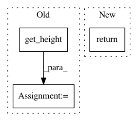

d1b3ca34d948954216d38cd243dad51a4442e876,src/rastervision/ml_tasks/object_detection.py,,make_pos_windows,#Any#Any#Any#,25
Before Change
def make_pos_windows(image_extent, label_store, chip_size):
pos_windows = []
for box in label_store.get_all_labels().get_boxes():
window = box.make_random_square_container(
image_extent.get_width(), image_extent.get_height(), chip_size)
pos_windows.append(window)
return pos_windows
After Change
window_method = options.object_detection_options.window_method
if window_method == "label":
return _make_label_pos_windows(image_extent, label_store, options)
elif window_method == "image":
return [image_extent.make_copy()]
else:
return _make_chip_pos_windows(image_extent, label_store, options)
In pattern: SUPERPATTERN
Frequency: 3
Non-data size: 3
Instances
Project Name: azavea/raster-vision
Commit Name: d1b3ca34d948954216d38cd243dad51a4442e876
Time: 2018-05-08
Author: dustymugs@gmail.com
File Name: src/rastervision/ml_tasks/object_detection.py
Class Name:
Method Name: make_pos_windows
Project Name: azavea/raster-vision
Commit Name: 5f3816229c47e7dd16a502ba33d57f0e68cfdb8b
Time: 2018-06-11
Author: lewfish@gmail.com
File Name: src/rastervision/raster_sources/rasterio_raster_source.py
Class Name: RasterioRasterSource
Method Name: _get_chip
Project Name: azavea/raster-vision
Commit Name: c3c85a3a67e2fa8bb421bddd21c470d933807b84
Time: 2018-03-20
Author: lewfish@gmail.com
File Name: src/rv2/ml_tasks/object_detection.py
Class Name: ObjectDetection
Method Name: get_predict_windows